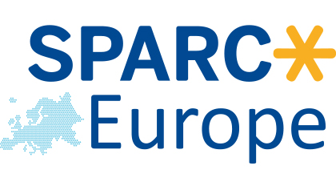
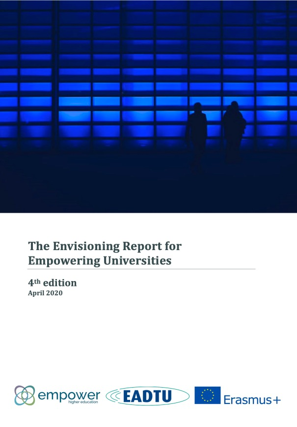

| #6|20 |
| open |
|
ESSENTIAL UPDATES FOR THOSE WORKING TO ADVANCE OPEN IN EUROPE A SPARC Europe publication |
|  |
Map Our InfustructureA one year-project aimed at gathering insights into scholarly communications infrastructure in Europe recently launched. Funded by the Open Society Foundations and led by SPARC Europe, the project will identify scholarly communication infrastructure that is Europe-based; identify the business models being used by said infrastructure; and determine the degree of openness of the infrastructure while also exploring what kinds of measures might be taken to mkae it more open. Read More |
|  |
Get an early look: Initial results from recent study of OE landscape among Higher Education libraries in EuropeIn late 2019, SPARC Europe, in consultation with the European Network of Open Education Librarians (ENOEL), launched a survey, a first of its kind, designed to gather insights into the current Open Education (OE) landscape within Higher Education libraries. Interim results from this work have recently been published in the 2020 Envisioning Report for Empowering Universities. Our final report is scheduled to publish in May 2020. Read More |
Why, in your opinion, do we need Open Access to research?Open Access publishing is particularly relevant in environmental health because the field directly relates to decisions in society, issues that often attract public attention. To make the best possible decisions as a society, documentation on environmental hazards should be shared with the public, policy makers, the private sector, and other interested parties. In other words, the results of such concerning science should be widely accessible to all, with no excessive fees to pay, particularly since science is often financed by public funds. My ambition was therefore to use the Open Access opportunity to help environmental health research become more readily available and thereby more useful. Read More |

|
stay-sane-stay-safe.com/A Dutch design studio and a textbureau started an open project to support caregivers in this time of the Coronavirus pandemic. They designed posters themselves and also called on designers worldwide to do so. Hundreds of designers worldwide participated! Now there are more than a thousand poster designs from 73 countries. Free to download, print and share on socials! stay-sane-stay-safe.com |
| This news brief was compiled and distributed by the SPARC Europe staff. Any questions or comments can be directed to Angela Walseng, Communications Adviser for SPARC Europe. |